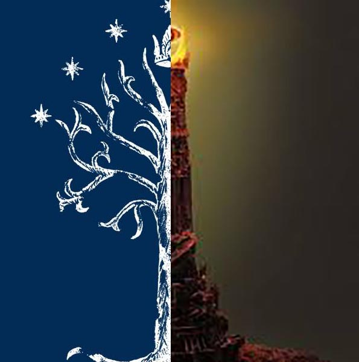

- 
- La bataille de la Terre du Milieu
-
- Le monde de la terre du milieu est en plein combat, les forces de Sauron se répandent sur cette terre à la recherche de l’Unique, pour que leurs maîtres puissent reprendre une forme physique et assouvir les peuples.
- De l’autre côté, les forces des peuples libres tentent désespérément de défendre leur terre. Les elfes, les nains et les hommes s’unissent contre les armées des ténèbres .
- Écrivez-votre histoire en aidant la faction de votre choix pour la conquête de cette terre.
- Lumière ou Ténèbres, Bien ou mal, Vie ou Mort …C’est VOTRE choix!!